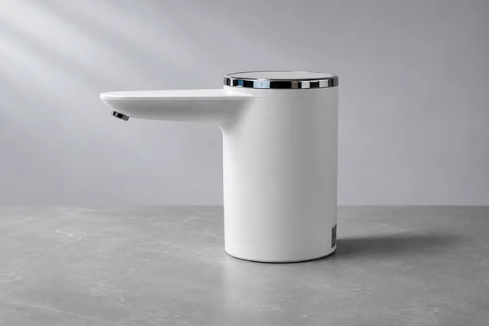
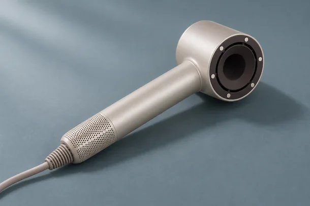

Как оформить заказ?
Нажмите «Купить» на странице модели и оформите заказ в корзине: имя, телефон, город и адрес. Регистрация не нужна.
Когда мне позвонят?
Менеджер позвонит в течение [15 минут] в рабочее время [ежедневно, 9:00–21:00]. Если заказ пришёл ночью, позвоним утром.
Как оплатить?
Способ оплаты согласует менеджер по телефону, платите при получении. Оплата на сайте картой и через Kaspi появится позже. Доставка и оплата
Сколько ждать доставку?
По Алматы [1–2 дня], в крупные города [2–4 дня], в остальные [4–7 дней]. Сроки по городам
Где посмотреть, что с заказом?
На странице «Статус заказа»: введите номер заказа и телефон.
Можно ли вернуть покупку?
Да, в течение [14 дней], если техникой не пользовались и сохранены упаковка, комплект и чек. Условия возврата
Техника сломалась. Что делать?
Оставьте заявку на странице «Гарантия и сервис». Гарантия [12 месяцев] со дня получения.
Где найти серийный номер?
[На наклейке снизу корпуса и на коробке.] Он нужен для гарантии.
Есть ли инструкция на казахском?
Инструкции в PDF на русском и казахском [появятся]. Пока главное по каждой модели собрано ниже.
Инструкции по моделям
[Шаги «Как начать» составлены по карточкам товара. Сверить с паспортом модели до публикации.] Инструкции в PDF появятся [позже].

Главное
- Объём
- 1,7 л
- Мощность
- 2200 Вт
- Корпус
- Стекло
- Контроллер
- Strix VQ
Как начать
- Перед первым использованием вскипятите полный чайник воды и слейте её. Повторите ещё раз.
- Наливайте воду между метками MIN и MAX на стекле.
- Фильтр в носике снимайте и промывайте, когда на нём появится накипь.

Главное
- Объём чаши
- 2 л
- Автопрограммы
- 4
- Скорости
- 3
- Импульсный режим
- Pulse
Как начать
- Промойте чашу и крышку перед первым использованием.
- Заложите продукты, закройте крышку и поставьте чашу на основание.
- Выберите программу: Juice, Smoothie, Milkshake или Nut Milk. Для коротких импульсов есть Pulse.

Главное
- Порции
- 0,1 / 0,2 / 0,3 / 0,5 / 0,8 / 1,5 л
- Напряжение аккумулятора
- 3,7 В
- Разъём
- USB Type-C
- Параметры зарядки
- 5 В / 1 А
Как начать
- Зарядите помпу через USB Type-C, 5 В / 1 А.
- Опустите трубку в бутыль и наденьте помпу на горлышко.
- Выберите порцию: 0,1 / 0,2 / 0,3 / 0,5 / 0,8 или 1,5 л.

Главное
- Объём бака
- 4 л
- Расход воды
- До 280 мл/ч
- Площадь помещения
- 25–40 м²
- Принцип увлажнения
- Ультразвуковой
Как начать
- Налейте в бак чистую воду комнатной температуры. Вода заливается сверху.
- Включите увлажнитель и выберите режим на панели или пультом. Температура и влажность видны на дисплее.
- Когда вода кончится, увлажнитель выключится сам. Долейте воду и включите снова.

Главное
- Объём бака
- 4 л
- Уровни увлажнения
- 3
- Управление
- Пульт ДУ
- Режимы
- Таймер, ночной режим
Как начать
- Снимите бак с основания и наполните его чистой водой.
- Поставьте бак на место, включите и выберите один из трёх уровней пультом.
- Ароматическое масло капайте только в отдельный отсек, не в бак с водой.

Главное
- Скорости
- 3
- Зарядка
- USB Type-C
- Конструкция
- Складная
- Дисплей
- Цифровой
Как начать
- Перед первым включением зарядите вентилятор кабелем Type-C из комплекта.
- Разложите головку на шарнире под нужным углом.
- Кнопкой выберите одну из трёх скоростей. Скорость и заряд видны на дисплее.

Главное
- Мощность
- 350 Вт
- Режимы работы
- 3
- Формат
- Вертикальный и ручной
- Питание
- Съёмный аккумулятор
Как начать
- Полностью зарядите съёмный аккумулятор перед первой уборкой.
- Для пола соберите пылесос с трубкой и щёткой. Для мебели и полок снимите трубку.
- После уборки опустошите контейнер и проверьте предварительный фильтр и HEPA.

Главное
- Мощность
- 120 Вт
- Аккумулятор
- 2000 мА·ч
- Режимы
- Всасывание и выдув
- Оснастка
- Сменные насадки
Как начать
- Зарядите аккумулятор перед первой уборкой.
- Для щелей между сиденьями наденьте узкую удлинённую насадку.
- Пыль из углублений сначала выдуйте в режиме выдува, затем соберите всасыванием.

Главное
- Мощность
- 1600 Вт
- Температурные режимы
- 4
- Двигатель
- Бесщёточный, BLDC
- Частота вращения
- 110 000 об/мин
Как начать
- Включайте фен в сеть 220–240 В.
- Выберите один из четырёх температурных режимов.
- Приложите насадку к магнитному кольцу: диффузор для волн, концентратор для отдельных прядей.

Главное
- Принцип сушки
- Тёплый воздух
- Таймер
- Поворотный
- Конструкция
- Складная
Как начать
- Соберите каркас и наденьте тканевый чехол.
- Развесьте вещи внутри и застегните чехол спереди.
- Поверните таймер на нужное время, до 180 минут.

Главное
- Лезвия
- 6
- Режимы
- 3
- Время работы
- До 90 мин
- Зарядка
- USB
Как начать
- Зарядите машинку через USB.
- Выберите один из трёх режимов под ткань.
- Ведите сеткой по ткани без нажима. Катышки соберутся внутри корпуса, очищайте отсек после работы.